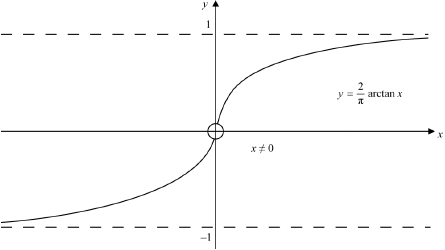
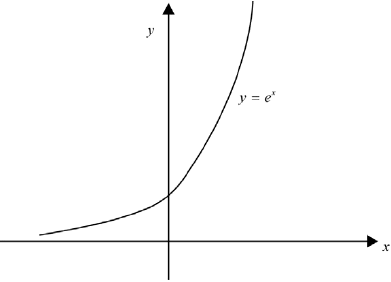

HL Paper 3
In this question you will be exploring the strategies required to solve a system of linear differential equations.
Consider the system of linear differential equations of the form:
and ,
where and is a parameter.
First consider the case where .
Now consider the case where .
Now consider the case where .
From previous cases, we might conjecture that a solution to this differential equation is , and is a constant.
By solving the differential equation , show that where is a constant.
Show that .
Solve the differential equation in part (a)(ii) to find as a function of .
By differentiating with respect to , show that .
By substituting , show that where is a constant.
Hence find as a function of .
Hence show that , where is a constant.
Show that .
Find the two values for that satisfy .
Let the two values found in part (c)(ii) be and .
Verify that is a solution to the differential equation in (c)(i),where is a constant.
Markscheme
METHOD 1
(M1)
OR A1A1
Note: Award A1 for and A1 for and .
AG
METHOD 2
rearranging to AND multiplying by integrating factor M1
A1A1
AG
[3 marks]
substituting into differential equation in M1
AG
[1 mark]
integrating factor (IF) is (M1)
(A1)
(A1)
A1
Note: The first constant must be , and the second can be any constant for the final A1 to be awarded. Accept a change of constant applied at the end.
[4 marks]
A1
EITHER
(M1)
A1
OR
(M1)
A1
THEN
AG
[3 marks]
A1
M1
OR A1
AG
[3 marks]
M1
A1
Note: The first constant must be , and the second can be any constant for the final A1 to be awarded. Accept a change of constant applied at the end.
[2 marks]
METHOD 1
substituting and their (iii) into M1(M1)
A1
AG
Note: Follow through from incorrect part (iii) cannot be awarded if it does not lead to the AG.
METHOD 2
M1
A1
M1
AG
[3 marks]
seen anywhere M1
METHOD 1
attempt to eliminate M1
A1
AG
METHOD 2
rewriting LHS in terms of and M1
A1
AG
[3 marks]
(A1)
(M1)
(since ) A1
and are and (either order) A1
[4 marks]
METHOD 1
(A1)(A1)
M1
A1
AG
METHOD 2
(A1)(A1)
M1
A1
AG
[4 marks]
Examiners report
In this question you will explore some of the properties of special functions and and their relationship with the trigonometric functions, sine and cosine.
Functions and are defined as and , where .
Consider and , such that .
Using , find expressions, in terms of and , for
The functions and are known as circular functions as the general point () defines points on the unit circle with equation .
The functions and are known as hyperbolic functions, as the general point ( ) defines points on a curve known as a hyperbola with equation . This hyperbola has two asymptotes.
Verify that satisfies the differential equation .
Show that .
.
.
Hence find, and simplify, an expression for .
Show that .
Sketch the graph of , stating the coordinates of any axis intercepts and the equation of each asymptote.
The hyperbola with equation can be rotated to coincide with the curve defined by .
Find the possible values of .
Markscheme
A1
A1
AG
[2 marks]
METHOD 1
substituting and M1
(M1)
A1
AG
METHOD 2
M1
M1A1
AG
Note: Accept combinations of METHODS 1 & 2 that meet at equivalent expressions.
[3 marks]
substituting into the expression for (M1)
obtaining (A1)
Note: The M1 can be awarded for the use of sine and cosine being odd and even respectively.
A1
[3 marks]
substituting and attempt to simplify (M1)
A1
[2 marks]
METHOD 1
substituting expressions found in part (c) (M1)
A1
METHOD 2
M1
A1
Note: Accept equivalent final answers that have been simplified removing all imaginary parts eg etc
[2 marks]
M1
A1
A1
Note: Award A1 for a value of 1 obtained from either LHS or RHS of given expression.
M1
(hence ) AG
Note: Award full marks for showing that .
[4 marks]
![]() A1A1A1A1
A1A1A1A1
Note: Award A1 for correct curves in the upper quadrants, A1 for correct curves in the lower quadrants, A1 for correct -intercepts of and (condone and ), A1 for and .
[4 marks]
attempt to rotate by in either direction (M1)
Note: Evidence of an attempt to relate to a sketch of would be sufficient for this (M1).
attempting to rotate a particular point, eg (M1)
rotates to (or similar) (A1)
hence A1A1
[5 marks]
Examiners report
Consider the functions , : defined by
and .
Find .
Find .
State with a reason whether or not and commute.
Find the inverse of .
Markscheme
() (M1)
A1A1
[3 marks]
A1A1
[2 marks]
no because R1
Note: Accept counter example.
[1 mark]
(M1)
(M1)
A1
[3 marks]
Examiners report
This question asks you to explore cubic polynomials of the form for and corresponding cubic equations with one real root and two complex roots of the form for .
In parts (a), (b) and (c), let and .
Consider the equation for .
Consider the function for .
Consider the function for where and .
The equation for has roots and where and .
On the Cartesian plane, the points and represent the real and imaginary parts of the complex roots of the equation .
The following diagram shows a particular curve of the form and the tangent to the curve at the point . The curve and the tangent both intersect the -axis at the point . The points and are also shown.
![]()
Consider the curve for . The points and are as defined in part (d)(ii). The curve has a point of inflexion at point .
Consider the special case where and .
Given that and are roots of the equation, write down the third root.
Verify that the mean of the two complex roots is .
Show that the line is tangent to the curve at the point .
Sketch the curve and the tangent to the curve at point , clearly showing where the tangent crosses the -axis.
Show that .
Hence, or otherwise, prove that the tangent to the curve at the point intersects the -axis at the point .
Deduce from part (d)(i) that the complex roots of the equation can be expressed as .
Use this diagram to determine the roots of the corresponding equation of the form for .
State the coordinates of .
Show that the -coordinate of is .
You are not required to demonstrate a change in concavity.
Hence describe numerically the horizontal position of point relative to the horizontal positions of the points and .
Sketch the curve for and .
For and , state in terms of , the coordinates of points and .
Markscheme
A1
[1 mark]
mean A1
AG
[1 mark]
METHOD 1
attempts product rule differentiation (M1)
Note: Award (M1) for attempting to express as
A1
A1
Note: Where is correct, award A1 for solving and obtaining .
EITHER
A1
OR
A1
OR
states the gradient of is also and verifies that lies on the line A1
THEN
so is the tangent to the curve at AG
Note: Award a maximum of (M0)A0A1A1 to a candidate who does not attempt to find .
METHOD 2
sets to form (M1)
EITHER
A1
attempts to solve a correct cubic equation (M1)
OR
recognises that and forms A1
attempts to solve a correct quadratic equation (M1)
THEN
is a double root R1
so is the tangent to the curve at AG
Note: Candidates using this method are not required to verify that .
[4 marks]
![]()
a positive cubic with an -intercept , and a local maximum and local minimum in the first quadrant both positioned to the left of A1
Note: As the local minimum and point A are very close to each other, condone graphs that seem to show these points coinciding.
For the point of tangency, accept labels such as or the point labelled from both axes. Coordinates are not required.
a correct sketch of the tangent passing through and crossing the -axis at the same point as the curve A1
Note: Award A1A0 if both graphs cross the -axis at distinctly different points.
[2 marks]
EITHER
(M1)A1
OR
attempts to find M1
A1
THEN
AG
[2 marks]
METHOD 1
(A1)
(A1)
attempts to substitute their and into M1
EITHER
A1
sets so M1
OR R1
OR
sets so M1
OR R1
A1
THEN
so the tangent intersects the -axis at the point AG
METHOD 2
(A1)
(A1)
attempts to substitute their and into and attempts to find M1
EITHER
A1
sets so M1
OR R1
OR
sets so M1
OR R1
A1
METHOD 3
(A1)
the line through parallel to the tangent at has equation
A1
sets to form M1
A1
A1
since there is a double root , this parallel line through is the required tangent at R1
[6 marks]
EITHER
(since ) R1
Note: Accept .
OR
and R1
THEN
hence the complex roots can be expressed as AG
[1 mark]
(seen anywhere) A1
EITHER
attempts to find the gradient of the tangent in terms of and equates to (M1)
OR
substitutes and to form (M1)
OR
substitutes and into (M1)
THEN
roots are (seen anywhere) and A1A1
Note: Award A1 for and A1 for . Do not accept coordinates.
[4 marks]
A1
Note: Accept “ and ”.
Do not award A1FT for .
[1 mark]
attempts to find M1
sets and correctly solves for A1
for example, obtaining leading to
so AG
Note: Do not award A1 if the answer does not lead to the AG.
[2 marks]
point is of the horizontal distance (way) from point to point A1
Note: Accept equivalent numerical statements or a clearly labelled diagram displaying the numerical relationship.
Award A0 for non-numerical statements such as “ is between and , closer to ”.
[1 mark]
(A1)
![]()
a positive cubic with no stationary points and a non-stationary point of inflexion at A1
Note: Graphs may appear approximately linear. Award this A1 if a change of concavity either side of is apparent.
Coordinates are not required and the -intercept need not be indicated.
[2 marks]
A1
[1 mark]
Examiners report
Part (a) (i) was generally well done with a significant majority of candidates using the conjugate root theorem to state as the third root. A number of candidates, however, wasted considerable time attempting an algebraic method to determine the third root. Part (a) (ii) was reasonably well done. A few candidates however attempted to calculate the product of and .
Part (b) was reasonably well done by a significant number of candidates. Most were able to find a correct expression for and a good number of those candidates were able to determine that . Candidates that did not determine the equation of the tangent had to state that the gradient of is also 1 and verify that the point (4,3) lies on the line. A few candidates only met one of those requirements. Weaker candidates tended to only verify that the point (4,3) lies on the curve and the tangent line without attempting to find .
Part (c) was not answered as well as anticipated. A number of sketches were inaccurate and carelessly drawn with many showing both graphs crossing the x-axis at distinctly different points.
Part (d) (i) was reasonably well done by a good number of candidates. Most successful responses involved use of the product rule. A few candidates obtained full marks by firstly expanding , then differentiating to find and finally simplifying to obtain the desired result. A number of candidates made elementary mistakes when differentiating. In general, the better candidates offered reasonable attempts at showing the general result in part (d) (ii). A good number gained partial credit by determining that and/or . Only the very best candidates obtained full marks by concluding that as or , then when .
In general, only the best candidates were able to use the result to deduce that the complex roots of the equation can be expressed as . Although given the complex roots , a significant number of candidates attempted, with mixed success, to use the quadratic formula to solve the equation .
In part (f) (i), only a small number of candidates were able to determine all the roots of the equation. Disappointingly, a large number did not state as a root. Some candidates determined that but were unable to use the diagram to determine that . Of the candidates who determined all the roots in part (f) (i), very few gave the correct coordinates for C2 . The most frequent error was to give the y-coordinate as .
Of the candidates who attempted part (g) (i), most were able to find an expression for and a reasonable number of these were then able to convincingly show that . It was very rare to see a correct response to part (g) (ii). A few candidates stated that P is between R and A with some stating that P was closer to A. A small number restated in words.
Of the candidates who attempted part (h) (i), most were able to determine that . However, most graphs were poorly drawn with many showing a change in concavity at rather than at . In part (h) (ii), only a very small number of candidates determined that A and P coincide at (r,0).
This question asks you to explore the behaviour and some key features of the function , where and .
In parts (a) and (b), only consider the case where .
Consider .
Consider , where .
Now consider where and .
By using the result from part (f) and considering the sign of , show that the point on the graph of is
Sketch the graph of , stating the values of any axes intercepts and the coordinates of any local maximum or minimum points.
Use your graphic display calculator to explore the graph of for
• the odd values and ;
• the even values and .
Hence, copy and complete the following table.
![]()
Show that .
State the three solutions to the equation .
Show that the point on the graph of is always above the horizontal axis.
Hence, or otherwise, show that , for .
a local minimum point for even values of , where and .
a point of inflexion with zero gradient for odd values of , where and .
Consider the graph of , where , and .
State the conditions on and such that the equation has four solutions for .
Markscheme
![]()
inverted parabola extended below the -axis A1
-axis intercept values A1
Note: Accept a graph passing through the origin as an indication of .
local maximum at A1
Note: Coordinates must be stated to gain the final A1.
Do not accept decimal approximations.
[3 marks]
![]() A1A1A1A1A1A1
A1A1A1A1A1A1
Note: Award A1 for each correct value.
For a table not sufficiently or clearly labelled, assume that their values are in the same order as the table in the question paper and award marks accordingly.
[6 marks]
METHOD 1
attempts to use the product rule (M1)
A1A1
Note: Award A1 for a correct and A1 for a correct .
EITHER
attempts to factorise (involving at least one of or ) (M1)
A1
OR
attempts to express as the difference of two products with each product containing at least one of or (M1)
A1
THEN
AG
Note: Award the final (M1)A1 for obtaining any of the following forms:
METHOD 2
(M1)
A1
attempts to use the chain rule (M1)
A1A1
Note: Award A1 for and A1 for .
AG
[5 marks]
A2
Note: Award A1 for either two correct solutions or for obtaining
Award A0 otherwise.
[2 marks]
attempts to find an expression for (M1)
A1
EITHER
since (for and so ) R1
Note: Accept any logically equivalent conditions/statements on and .
Award R0 if any conditions/statements specified involving , or both are incorrect.
OR
(since ), raised to an even power () (or equivalent reasoning) is always positive (and so ) R1
Note: The condition is given in the question. Hence some candidates will assume and not state it. In these instances, award R1 for a convincing argument.
Accept any logically equivalent conditions/statements on on and .
Award R0 if any conditions/statements specified involving , or both are incorrect.
THEN
so is always above the horizontal axis AG
Note: Do not award (M1)A0R1.
[3 marks]
METHOD 1
A1
EITHER
as and R1
OR
and are all R1
Note: Do not award A0R1.
Accept equivalent reasoning on correct alternative expressions for and accept any logically equivalent conditions/statements on and .
Exceptions to the above are condone and condone .
An alternative form for is .
THEN
hence AG
METHOD 2
and A1
(since is continuous and there are no stationary points between and )
the gradient (of the curve) must be positive between and R1
Note: Do not award A0R1.
hence AG
[2 marks]
for even:
(and are both ) R1
A1
and (seen anywhere) A1
Note: Candidates can give arguments based on the sign of to obtain the R mark.
For example, award R1 for the following:
If is even, then is odd and hence .
Do not award R0A1.
The second A1 is independent of the other two marks.
The A marks can be awarded for correct descriptions expressed in words.
Candidates can state as a point of zero gradient from part (d) or show, state or explain (words or diagram) that . The last A mark can be awarded for a clearly labelled diagram showing changes in the sign of the gradient.
The last A1 can be awarded for use of a specific case (e.g. ).
hence is a local minimum point AG
[3 marks]
for odd:
, (and are both ) so R1
Note: Candidates can give arguments based on the sign of to obtain the R mark.
For example, award R1 for the following:
If is odd, then is even and hence .
and (seen anywhere) A1
Note: The A1 is independent of the R1.
Candidates can state as a point of zero gradient from part (d) or show, state or explain (words or diagram) that . The last A mark can be awarded for a clearly labelled diagram showing changes in the sign of the gradient.
The last A1 can be awarded for use of a specific case (e.g. ).
hence is a point of inflexion with zero gradient AG
[2 marks]
considers the parity of (M1)
Note: Award M1 for stating at least one specific even value of .
must be even (for four solutions) A1
Note: The above 2 marks are independent of the 3 marks below.
A1A1A1
Note: Award A1 for the correct lower endpoint, A1 for the correct upper endpoint and A1 for strict inequality signs.
The third A1 (strict inequality signs) can only be awarded if A1A1 has been awarded.
For example, award A1A1A0 for . Award A1A0A0 for .
Award A1A0A0 for .
[5 marks]
Examiners report
This question asks you to explore the behaviour and key features of cubic polynomials of the form .
Consider the function for and where is a parameter, .
The graphs of for and are shown in the following diagrams.
![]()
On separate axes, sketch the graph of showing the value of the -intercept and the coordinates of any points with zero gradient, for
Hence, or otherwise, find the set of values of such that the graph of has
Given that the graph of has one local maximum point and one local minimum point, show that
Hence, for , find the set of values of such that the graph of has
.
.
Write down an expression for .
a point of inflexion with zero gradient.
one local maximum point and one local minimum point.
no points where the gradient is equal to zero.
the -coordinate of the local maximum point is .
the -coordinate of the local minimum point is .
exactly one -axis intercept.
exactly two -axis intercepts.
exactly three -axis intercepts.
Consider the function for and where .
Find all conditions on and such that the graph of has exactly one -axis intercept, explaining your reasoning.
Markscheme
![]()
: positive cubic with correct -intercept labelled A1
local maximum point correctly labelled A1
local minimum point correctly labelled A1
[3 marks]
![]()
: positive cubic with correct -intercept labelled A1
local maximum point correctly labelled A1
local minimum point correctly labelled A1
Note: Accept the following exact answers:
Local maximum point coordinates .
Local minimum point coordinates .
[3 marks]
A1
Note: Accept (an expression).
[1 mark]
A1
[1 mark]
considers the number of solutions to their (M1)
A1
[2 marks]
A1
Note: The (M1) in part (c)(ii) can be awarded for work shown in either (ii) or (iii).
[1 mark]
attempts to solve their for (M1)
(A1)
Note: Award (A1) if either or is subsequently considered.
Award the above (M1)(A1) if this work is seen in part (c).
correctly evaluates A1
the -coordinate of the local maximum point is AG
[3 marks]
correctly evaluates A1
the -coordinate of the local minimum point is AG
[1 mark]
the graph of will have one -axis intercept if
EITHER
(or equivalent reasoning) R1
OR
the minimum point is above the -axis R1
Note: Award R1 for a rigorous approach that does not (only) refer to sketched graphs.
THEN
A1
Note: Condone . The A1 is independent of the R1.
[2 marks]
the graph of will have two -axis intercepts if
EITHER
(or equivalent reasoning) (M1)
OR
evidence from the graph in part(a)(i) (M1)
THEN
A1
[2 marks]
the graph of will have three -axis intercepts if
EITHER
(or equivalent reasoning) (M1)
OR
reasoning from the results in both parts (e)(i) and (e)(ii) (M1)
THEN
A1
[2 marks]
case 1:
(independent of the value of ) A1
EITHER
does not have two solutions (has no solutions or solution) R1
OR
for R1
OR
the graph of has no local maximum or local minimum points, hence any vertical translation of this graph () will also have no local maximum or local minimum points R1
THEN
therefore there is only one -axis intercept AG
Note: Award at most A0R1 if only is considered.
case 2
is a local maximum point and is a local minimum point (A1)
Note: Award (A1) for a correct -coordinate seen for either the maximum or the minimum.
considers the positions of the local maximum point and/or the local minimum point (M1)
EITHER
considers both points above the -axis or both points below the -axis
OR
considers either the local minimum point only above the -axis OR the local maximum point only below the -axis
THEN
(both points above the -axis) A1
(both points above the -axis) A1
Note: Award at most (A1)(M1)A0A0 for case 2 if is not clearly stated.
[6 marks]
Examiners report
This question asks you to explore properties of a family of curves of the type for various values of and , where .
On the same set of axes, sketch the following curves for and , clearly indicating any points of intersection with the coordinate axes.
Now, consider curves of the form , for , where .
Next, consider the curve .
The curve has two points of inflexion. Due to the symmetry of the curve these points have the same -coordinate.
is defined to be a rational point on a curve if and are rational numbers.
The tangent to the curve at a rational point intersects the curve at another rational point .
Let be the curve , for . The rational point lies on .
Write down the coordinates of the two points of inflexion on the curve .
By considering each curve from part (a), identify two key features that would distinguish one curve from the other.
By varying the value of , suggest two key features common to these curves.
Show that , for .
Hence deduce that the curve has no local minimum or maximum points.
Find the value of this -coordinate, giving your answer in the form , where .
Find the equation of the tangent to at .
Hence, find the coordinates of the rational point where this tangent intersects , expressing each coordinate as a fraction.
The point also lies on . The line intersects at a further point. Determine the coordinates of this point.
Markscheme
![]()
approximately symmetric about the -axis graph of A1
including cusp/sharp point at A1
[2 marks]
Note: Final A1 can be awarded if intersections are in approximate correct place with respect to the axes shown. Award A1A1A1A0 if graphs ‘merge’ or ‘cross’ or are discontinuous at -axis but are otherwise correct. Award A1A0A0A0 if only one correct branch of both curves are seen.
Note: If they sketch graphs on separate axes, award a maximum of 2 marks for the ‘best’ response seen. This is likely to be A1A1A0A0.
approximately symmetric about the -axis graph of with approximately correct gradient at axes intercepts A1
some indication of position of intersections at , A1
[2 marks]
Note: Final A1 can be awarded if intersections are in approximate correct place with respect to the axes shown. Award A1A1A1A0 if graphs ‘merge’ or ‘cross’ or are discontinuous at -axis but are otherwise correct. Award A1A0A0A0 if only one correct branch of both curves are seen.
Note: If they sketch graphs on separate axes, award a maximum of 2 marks for the ‘best’ response seen. This is likely to be A1A1A0A0.
and A1
[1 mark]
Any two from:
has a cusp/sharp point, (the other does not)
graphs have different domains
has points of inflexion, (the other does not)
graphs have different -axis intercepts (one goes through the origin, and the other does not)
graphs have different -axis intercepts A1
Note: Follow through from their sketch in part (a)(i). In accordance with marking rules, mark their first two responses and ignore any subsequent.
[1 mark]
Any two from:
as ,
as is approximated by (or similar)
they have intercepts at
they have intercepts at
they all have the same range
(or -axis) is a line of symmetry
they all have the same line of symmetry
they have one -axis intercept
they have two -axis intercepts
they have two points of inflexion
at -axis intercepts, curve is vertical/infinite gradient
there is no cusp/sharp point at -axis intercepts A1A1
Note: The last example is the only valid answer for things “not” present. Do not credit an answer of “they are all symmetrical” without some reference to the line of symmetry.
Note: Do not allow same/ similar shape or equivalent.
Note: In accordance with marking rules, mark their first two responses and ignore any subsequent.
[2 marks]
METHOD 1
attempt to differentiate implicitly M1
A1
OR A1
AG
METHOD 2
attempt to use chain rule M1
A1A1
Note: Award A1 for , A1 for
AG
[3 marks]
EITHER
local minima/maxima occur when
has no (real) solutions (or equivalent) R1
OR
, so R1
THEN
so, no local minima/maxima exist AG
[1 mark]
EITHER
attempt to use quotient rule to find M1
A1A1
Note: Award A1 for correct and correct denominator, A1 for correct .
Note: Future A marks may be awarded if the denominator is missing or incorrect.
stating or using (may be seen anywhere) (M1)
OR
attempt to use product rule to find M1
A1A1
Note: Award A1 for correct first term, A1 for correct second term.
setting (M1)
OR
attempts implicit differentiation on M1
A1
recognizes that (M1)
(A1)
THEN
A1
attempt to use quadratic formula or equivalent (M1)
A1
Note: Accept any integer multiple of and (e.g. and ).
[7 marks]
attempt to find tangent line through (M1)
OR A1
[2 marks]
attempt to solve simultaneously with (M1)
Note: The M1 mark can be awarded for an unsupported correct answer in an incorrect format (e.g. ).
obtain A1
[2 marks]
attempt to find equation of (M1)
(A1)
solve simultaneously with (M1)
A1
A1
OR
attempt to find vector equation of (M1)
(A1)
attempt to solve (M1)
A1
A1
[5 marks]
Examiners report
This was a relatively straightforward start, though it was disappointing to see so many candidates sketch their graphs on two separate axes, despite the question stating they should be sketched on the same axes.
Of those candidates producing clear sketches, the vast majority were able to recognise the points of inflexion and write down their coordinates. A small number embarked on a mostly fruitless algebraic approach rather than use their graphs as intended. The distinguishing features between curves tended to focus on points of intersection with the axes, which was accepted. Only a small number offered ideas such as on both curves. A number of (incorrect) suggestions were seen, stating that both curves tended towards a linear asymptote.
A majority of candidates' suggestions related to the number of intersection points with the coordinate axes, while the idea of the x-axis acting as a line of symmetry was also often seen.
The required differentiation was straightforward for the majority of candidates.
The majority employed the quotient rule here, often doing so successfully to find a correct expression for . Despite realising that , the resulting algebra to find the required solution proved a step too far for most. A number of slips were seen in candidates' working, though better candidates were able to answer the question confidently.
Mistakes proved to be increasingly common by this stage of the paper. Various equations of lines were suggested, with the incorrect appearing more than once. Only the better candidates were able to tackle the final part of the question with any success; it was pleasing to see a number of clear algebraic (only) approaches, though this was not necessary to obtain full marks.
Significant work on this question part was rarely seen, and it may have been the case that many candidates chose to spend their remaining time on the second question, especially if they felt they were making little progress with part f. Having said that, correct final answers were seen from better candidates, though these were few and far between.
This question asks you to explore some properties of polygonal numbers and to determine and prove interesting results involving these numbers.
A polygonal number is an integer which can be represented as a series of dots arranged in the shape of a regular polygon. Triangular numbers, square numbers and pentagonal numbers are examples of polygonal numbers.
For example, a triangular number is a number that can be arranged in the shape of an equilateral triangle. The first five triangular numbers are and .
The following table illustrates the first five triangular, square and pentagonal numbers respectively. In each case the first polygonal number is one represented by a single dot.
![]()
For an -sided regular polygon, where , the th polygonal number is given by
, where .
Hence, for square numbers, .
The th pentagonal number can be represented by the arithmetic series
.
For triangular numbers, verify that .
The number is a triangular number. Determine which one it is.
Show that .
State, in words, what the identity given in part (b)(i) shows for two consecutive triangular numbers.
For , sketch a diagram clearly showing your answer to part (b)(ii).
Show that is the square of an odd number for all .
Hence show that for .
By using a suitable table of values or otherwise, determine the smallest positive integer, greater than , that is both a triangular number and a pentagonal number.
A polygonal number, , can be represented by the series
where .
Use mathematical induction to prove that where .
Markscheme
OR A1
A1
Note: Award A0A1 if only is seen.
Do not award any marks for numerical verification.
so for triangular numbers, AG
[2 marks]
METHOD 1
uses a table of values to find a positive integer that satisfies (M1)
for example, a list showing at least consecutive terms
Note: Award (M1) for use of a GDC’s numerical solve or graph feature.
(th triangular number) A1
Note: Award A0 for . Award A0 if additional solutions besides are given.
METHOD 2
attempts to solve for (M1)
OR
(th triangular number) A1
Note: Award A0 for . Award A0 if additional solutions besides are given.
[2 marks]
attempts to form an expression for in terms of M1
EITHER
A1
OR
A1
THEN
AG
[2 marks]
the sum of the th and th triangular numbers
is the th square number A1
[1 mark]
![]() A1
A1
Note: Accept equivalent single diagrams, such as the one above, where the th and th triangular numbers and the th square number are clearly shown.
Award A1 for a diagram that show (a triangle with dots) and (a triangle with dots) and (a square with dots).
[1 mark]
METHOD 1
A1
attempts to expand their expression for (M1)
A1
and is odd AG
METHOD 2
A1
attempts to expand their expression for (M1)
A1
and is odd AG
Method 3
(where ) A1
attempts to expand their expression for (M1)
now equates coefficients and obtains and
A1
and is odd AG
[3 marks]
EITHER
and (A1)
substitutes their and their into M1
A1
OR
and (A1)
substitutes their and their into M1
A1
OR
(A1)
substitutes into their expression for M1
A1
OR
attempts to find the arithmetic mean of terms (M1)
A1
multiplies the above expression by the number of terms
A1
THEN
so AG
[3 marks]
METHOD 1
forms a table of values that includes some values for (M1)
forms a table of values that includes some values for (M1)
Note: Award (M1) if at least one value is correct. Award (M1) if at least one value is correct. Accept as above for values and values.
for triangular numbers (A1)
for pentagonal numbers (A1)
Note: Award (A1) if is seen in or out of a table. Award (A1) if is seen in or out of a table. Condone the use of the same parameter for triangular numbers and pentagonal numbers, for example, for triangular numbers and for pentagonal numbers.
(is a triangular number and a pentagonal number) A1
Note: Award all five marks for seen anywhere with or without working shown.
METHOD 2
EITHER
attempts to express as a quadratic in (M1)
(or equivalent)
attempts to solve their quadratic in (M1)
OR
attempts to express as a quadratic in (M1)
(or equivalent)
attempts to solve their quadratic in (M1)
THEN
for triangular numbers (A1)
for pentagonal numbers (A1)
(is a triangular number and a pentagonal number) A1
METHOD 3
let and so M1
A1
attempts to find the discriminant of their quadratic
and recognises that this must be a perfect square M1
determines that leading to and so A1
(is a triangular number and a pentagonal number) A1
METHOD 4
let and so M1
A1
attempts to find the discriminant of their quadratic
and recognises that this must be a perfect square M1
determines that leading to and so A1
(is a triangular number and a pentagonal number) A1
[5 marks]
Note: Award a maximum of R1M0M0A1M1A1A1R0 for a ‘correct’ proof using and .
consider and
so true for R1
Note: Accept and .
Do not accept one-sided considerations such as ' and so true for '.
Subsequent marks after this R1 are independent of this mark can be awarded.
Assume true for , ie. M1
Note: Award M0 for statements such as “let ”. The assumption of truth must be clear.
Subsequent marks after this M1 are independent of this mark and can be awarded.
Consider
( can be represented by the sum
and so
M1
A1
M1
(A1)
A1
hence true for and true true R1
therefore true for all
Note: Only award the final R1 if the first five marks have been awarded. Award marks as appropriate for solutions that expand both the LHS and (given) RHS of the equation.
[8 marks]
Examiners report
Part (a) (i) was generally well done. Unfortunately, some candidates adopted numerical verification. Part (a) (ii) was generally well done with the majority of successful candidates using their GDC judiciously and disregarding n = −27 as a possible solution. A few candidates interpreted the question as needing to deal with P3(351).
Although part (b) (i) was generally well done, a significant number of candidates laboured unnecessarily to show the required result. Many candidates set their LHS to equal the RHS throughout the solution. Part (b) (ii) was generally not well done with many candidates unable to articulate clearly in words and symbols what the given identity shows for the sum of two consecutive triangular numbers. In part (b) (iii), most candidates were unable to produce a clear diagram illustrating the identity stated in part (b) (i).
Part (c) was reasonably well done. Most candidates were able to show algebraically that . A good number of candidates were then able to express as and conclude that is odd. Rather than making the connection that is a perfect square, many candidates attempted instead to analyse the parity of either or . As with part (b) (i), many candidates set their LHS to equal the RHS throughout the solution. A number of candidates unfortunately adopted numerical verification.
Part (d) was not answered as well as anticipated with many candidates not understanding what was
required. Instead of using the given arithmetic series to show that , a large number of
candidates used . Unfortunately, a number of candidates adopted numerical verification.
In part (e), the overwhelming majority of candidates who successfully determined that 210 is the smallest positive integer greater than 1 that is both triangular and pentagonal used a table of values. Unfortunately, a large proportion of these candidates seemingly spent quite a few minutes listing the first 20 triangular numbers and the first 12 pentagonal numbers. And it can be surmised that a number of these candidates constructed their table of values either without the use of a GDC or with the arithmetic functionality of a GDC rather than with a GDC's table of values facility. Candidates should be aware that a relevant excerpt from a table of values is sufficient evidence of correct working. A number of candidates started constructing a table of values but stopped before identifying 210. Disappointingly, a significant number of candidates attempted to solve for .
Part (f) proved beyond the reach of most with only a small number of candidates successfully proving the given result. A significant number of candidates were unable to show that the result is true for . A number of candidates established the validity of the base case for the RHS only while a number of other candidates attempted to prove the base case for r = 3. A large number of candidates did not state the inductive step correctly with the assumption of truth not clear. A number of candidates then either attempted to work backwards from the given result or misinterpreted the question and attempted to prove the result stated in the question stem rather than the result stated in the question. Some candidates who were awarded the first answer mark when considering the case were unable to complete the square or equivalent simplification correctly. Disappointingly, a significant number listed the steps involved in an induction proof without engaging in the actual proof.
Let be the set . Let be the set .
A function is defined by .
Let be the set .
A function is defined by .
(i) Sketch the graph of and hence justify whether or not is a bijection.
(ii) Show that is a group under the binary operation of multiplication.
(iii) Give a reason why is not a group under the binary operation of multiplication.
(iv) Find an example to show that is not satisfied for all .
(i) Sketch the graph of and hence justify whether or not is a bijection.
(ii) Show that for all .
(iii) Given that and are both groups, explain whether or not they are isomorphic.
Markscheme
* This question is from an exam for a previous syllabus, and may contain minor differences in marking or structure.
(i)  A1
Notes: Award A1 for general shape, labelled asymptotes, and showing that .
graph shows that it is injective since it is increasing or by the horizontal line test R1
graph shows that it is surjective by the horizontal line test R1
Note: Allow any convincing reasoning.
so is a bijection A1
(ii) closed since non-zero real times non-zero real equals non-zero real A1R1
we know multiplication is associative R1
identity is 1 A1
inverse of is A1
hence it is a group AG
(iii) does not have an identity A2
hence it is not a group AG
(iv) whereas is one counterexample A2
hence statement is not satisfied AG
[13 marks]

award A1 for general shape going through (0, 1) and with domain A1
graph shows that it is injective since it is increasing or by the horizontal line test and graph shows that it is surjective by the horizontal line test R1
Note: Allow any convincing reasoning.
so is a bijection A1
(ii) and M1A1
hence AG
(iii) since is a bijection and the homomorphism rule is obeyed R1R1
the two groups are isomorphic A1
[8 marks]
Examiners report
This question asks you to investigate conditions for the existence of complex roots of polynomial equations of degree and .
The cubic equation , where , has roots and .
Consider the equation , where .
Noah believes that if then and are all real.
Now consider polynomial equations of degree .
The equation , where , has roots and .
In a similar way to the cubic equation, it can be shown that:
.
The equation , has one integer root.
By expanding show that:
.
Show that .
Hence show that .
Given that , deduce that and cannot all be real.
Using the result from part (c), show that when , this equation has at least one complex root.
By varying the value of in the equation , determine the smallest positive integer value of required to show that Noah is incorrect.
Explain why the equation will have at least one real root for all values of .
Find an expression for in terms of and .
Hence state a condition in terms of and that would imply has at least one complex root.
Use your result from part (f)(ii) to show that the equation has at least one complex root.
State what the result in part (f)(ii) tells us when considering this equation .
Write down the integer root of this equation.
By writing as a product of one linear and one cubic factor, prove that the equation has at least one complex root.
Markscheme
attempt to expand M1
OR A1
A1
comparing coefficients:
AG
AG
AG
Note: For candidates who do not include the AG lines award full marks.
[3 marks]
(A1)
attempt to expand (M1)
or equivalent A1
AG
Note: Accept equivalent working from RHS to LHS.
[3 marks]
EITHER
attempt to expand (M1)
A1
or equivalent A1
AG
OR
attempt to write in terms of (M1)
A1
A1
AG
Note: Accept equivalent working where LHS and RHS are expanded to identical expressions.
[3 marks]
A1
if all roots were real R1
Note: Condone strict inequality in the R1 line.
Note: Do not award A0R1.
roots cannot all be real AG
[2 marks]
and A1
so the equation has at least one complex root R1
Note: Allow equivalent comparisons; e.g. checking
[2 marks]
use of GDC (eg graphs or tables) (M1)
A1
[2 marks]
complex roots appear in conjugate pairs (so if complex roots occur the other root will be real OR all 3 roots will be real).
OR
a cubic curve always crosses the -axis at at least one point. R1
[1 mark]
attempt to expand (M1)
(A1)
A1
[3 marks]
OR A1
Note: Allow FT on their result from part (f)(i).
[1 mark]
OR R1
hence there is at least one complex root. AG
Note: Allow FT from part (f)(ii) for the R mark provided numerical reasoning is seen.
[1 mark]
(so) nothing can be deduced R1
Note: Do not allow FT for the R mark.
[1 mark]
A1
[1 mark]
attempt to express as a product of a linear and cubic factor M1
A1A1
Note: Award A1 for each factor. Award at most A1A0 if not written as a product.
since for the cubic, R1
there is at least one complex root AG
[4 marks]
Examiners report
The first part of this question proved to be very accessible, with the majority of candidates expanding their brackets as required, to find the coefficients and .
The first part of this question was usually answered well, though presentation in the second part sometimes left a lot to be desired. The expression was expected to be seen more often, as a 'pivot' to reaching the required result. Algebra was often lengthy, but untidily so, sometimes leaving examiners to do some mental tidying up on behalf of the candidate.
A good number of candidates recognised the reasoning required in this part of the question and were able to score both marks.
Most candidates found applying this specific case to be very straightforward.
Most candidates offered incorrect answers in the first part; despite their working suggested utilisation of the GDC, it was clear that many did not appreciate what the question was asking. The second part was usually answered well, with the idea of complex roots occurring in conjugate pairs being put to good use.
Some very dubious algebra was seen here, and often no algebra at all. Despite this, a good number of candidates seemed to make the 'leap' to the correct expression , perhaps fortuitously so in a number of cases.
Of those finding in part f, a surprising number of answers seen employed the test of checking whether .
Part i was usually not answered successfully, which may have been due to shortage of time. However, it was pleasing to see a number of candidates reach the end of the paper and successfully factorise the given quartic using a variety of methods. The final part required the test. Though correct reasoning was sometimes seen, it was rare for this final mark to be gained.